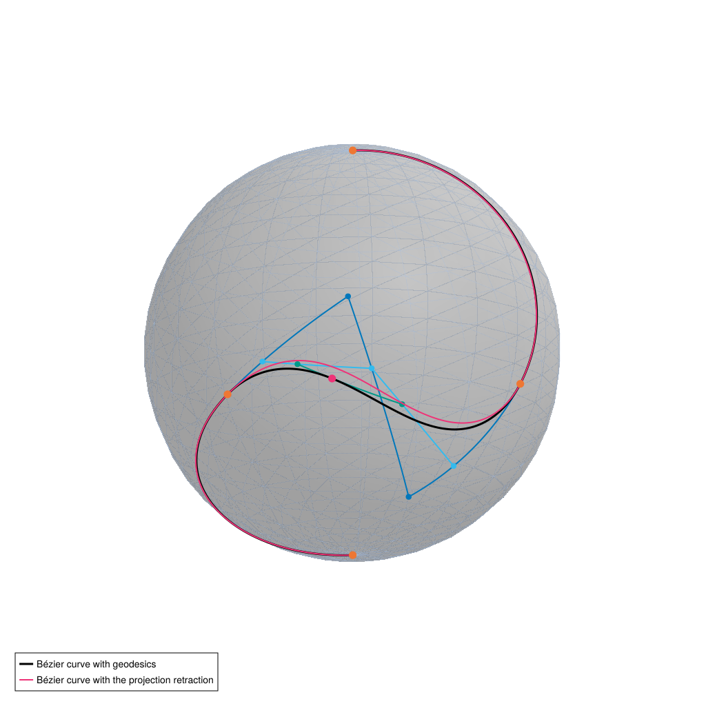

🚀 Get Started with Manifolds.jl
This is a short overview of Manifolds.jl and how to get started working with your first Manifold. we first need to install the package, using for example
using Pkg; Pkg.add("Manifolds")Then you can load the package with
using ManifoldsUsing the Library of Manifolds
Manifolds.jl is first of all a library of manifolds, see the list in the menu here under “basic manifolds”.
Let’s look at three examples together with the first few functions on manifolds.
1. The Euclidean space
The Euclidean Space Euclidean brings us (back) into linear case of vectors, so in terms of manifolds, this is a very simple one. It is often useful to compare to classical algorithms, or implementations.
M₁ = Euclidean(3)Euclidean(3; field=ℝ)Since a manifold is a type in Julia, we write it in CamelCase. Its parameters are first a dimension or size parameter of the manifold, sometimes optional is a field the manifold is defined over.
For example the above definition is the same as the real-valued case
M₁ === Euclidean(3, field = ℝ)trueBut we even introduced a short hand notation, since ℝ is also just a symbol/variable to use.
M₁ === ℝ^3trueAnd similarly here are two ways to create the manifold of vectors of length two with complex entries – or mathematically the space $\mathbb C^2$
Euclidean(2, field = ℂ) === ℂ^2trueThe easiest to check is the dimension of a manifold. Here we have three “directions to walk into” at every point $p\in \mathbb R ^3$ so manifold_dimension is
manifold_dimension(M₁)32. The hyperbolic space
The $d$-dimensional hyperbolic space is usually represented in $\mathbb R^{d+1}$ as the set of points $p\in\mathbb R^{d+1}$ fulfilling
\[p_1^2+p_2^2+\dots+p_d^2-p_{d+1}^2 = -1, \quad p_{d+1} > 0.\]
We define the manifold using
M₂ = Hyperbolic(2)Hyperbolic(2)And we can again just start with looking at the manifold dimension of M₂
manifold_dimension(M₂)2A next useful function is to check, whether some $p∈\mathbb R^3$ is a point on the manifold M₂. We can check
is_point(M₂, [0, 0, 1])trueor
is_point(M₂, [1, 0, 1])falseKeyword arguments are passed on to any numerical checks, for example an absolute tolerance when checking the above equality.
But in an interactive session an error message might be helpful. A positional (third) argument is present to activate this. Setting this parameter to true, we obtain an error message that gives insight into why the point is not a point on M₂. Note that the LoadError: is due to quarto, on REPL you would just get the DomainError.
is_point(M₂, [0, 0, 1.001], true)DomainError: DomainError(-1.0020009999999997, "The point [0.0, 0.0, 1.001] does not lie on Hyperbolic(2) since its Minkowski inner product is not -1.")
DomainError with -1.0020009999999997:
The point [0.0, 0.0, 1.001] does not lie on Hyperbolic(2) since its Minkowski inner product is not -1.
Stacktrace:
[1] [0m[1m_is_point_forwarding[22m[0m[1m([22m[90mT[39m::[0mManifoldsBase.EmbeddedForwardingType[90m{ManifoldsBase.DirectEmbedding}[39m, [90mM[39m::[0mHyperbolic[90m{ManifoldsBase.TypeParameter{Tuple{2}}}[39m, [90mp[39m::[0mVector[90m{Float64}[39m; [90merror[39m::[0mSymbol, [90mkwargs[39m::[0m@Kwargs[90m{}[39m[0m[1m)[22m
[90m @[39m [35mManifoldsBase[39m [90m~/.julia/packages/ManifoldsBase/DRUyX/src/[39m[90m[4mdecorator_trait.jl:528[24m[39m
[2] [0m[1m_is_point_forwarding[22m
[90m @[39m [90m~/.julia/packages/ManifoldsBase/DRUyX/src/[39m[90m[4mdecorator_trait.jl:497[24m[39m[90m [inlined][39m
[3] [0m[1m#is_point#191[22m
[90m @[39m [90m~/.julia/packages/ManifoldsBase/DRUyX/src/[39m[90m[4mnested_trait.jl:149[24m[39m[90m [inlined][39m
[4] [0m[1mis_point[22m
[90m @[39m [90m~/.julia/packages/ManifoldsBase/DRUyX/src/[39m[90m[4mnested_trait.jl:147[24m[39m[90m [inlined][39m
[5] [0m[1m#is_point#113[22m
[90m @[39m [90m~/.julia/packages/ManifoldsBase/DRUyX/src/[39m[90m[4mManifoldsBase.jl:851[24m[39m[90m [inlined][39m
[6] [0m[1mis_point[22m[0m[1m([22m[90mM[39m::[0mHyperbolic[90m{ManifoldsBase.TypeParameter{Tuple{2}}}[39m, [90mp[39m::[0mVector[90m{Float64}[39m, [90mthrow_error[39m::[0mBool[0m[1m)[22m
[90m @[39m [35mManifoldsBase[39m [90m~/.julia/packages/ManifoldsBase/DRUyX/src/[39m[90m[4mManifoldsBase.jl:847[24m[39m
[7] top-level scope
[90m @[39m [90m~/work/Manifolds.jl/Manifolds.jl/tutorials/[39m[90m[4mgetstarted.qmd:111[24m[39m3. The sphere
The sphere $\mathbb S^d$ is the $d$-dimensional sphere represented in its embedded form, that is unit vectors $p \in \mathbb R^{d+1}$ with unit norm $\lVert p \rVert_2 = 1$.
M₃ = Sphere(2)Sphere(2)If we only have a point that is approximately on the manifold, we can allow for a tolerance. Usually these are the same values of atol and rtol allowed in isapprox, i.e. we get
is_point(M₃, [0, 0, 1.001]; atol = 1.0e-3)trueHere we can show a last nice check: is_vector to check whether a tangent vector X is a representation of a tangent vector $X∈T_p\mathcal M$ to a point p on the manifold.
This function has two positional arguments, the first to again indicate whether to throw an error, the second to disable the check that p is a valid point on the manifold. Usually this validity is essential for the tangent check, but if it was for example performed before, it can be turned off to spare time.
For example in our first example the point is not of unit norm
is_vector(M₃, [2, 0, 0], [0, 1, 1])falseBut the orthogonality of p and X is still valid, we can disable the point check, but even setting the error to true we get here
is_vector(M₃, [2, 0, 0], [0, 1, 1], true, false)falseBut of course it is better to use a valid point in the first place
is_vector(M₃, [1, 0, 0], [0, 1, 1])trueand for these we again get informative error messages
is_vector(M₃, [1, 0, 0], [0.1, 1, 1]; error = :error)DomainError: DomainError(0.1, "The vector [0.1, 1.0, 1.0] is not a tangent vector to [1, 0, 0] on Sphere(2), since it is not orthogonal in the embedding (tolerance: 2.1126042125758267e-8).")
DomainError with 0.1:
The vector [0.1, 1.0, 1.0] is not a tangent vector to [1, 0, 0] on Sphere(2), since it is not orthogonal in the embedding (tolerance: 2.1126042125758267e-8).
Stacktrace:
[1] [0m[1m_is_vector_forwarding[22m[0m[1m([22m[90mT[39m::[0mManifoldsBase.EmbeddedForwardingType[90m{ManifoldsBase.DirectEmbedding}[39m, [90mM[39m::[0mSphere[90m{ℝ, ManifoldsBase.TypeParameter{Tuple{2}}}[39m, [90mp[39m::[0mVector[90m{Int64}[39m, [90mX[39m::[0mVector[90m{Float64}[39m, [90mcheck_base_point[39m::[0mBool; [90merror[39m::[0mSymbol, [90mkwargs[39m::[0m@Kwargs[90m{}[39m[0m[1m)[22m
[90m @[39m [35mManifoldsBase[39m [90m~/.julia/packages/ManifoldsBase/DRUyX/src/[39m[90m[4mdecorator_trait.jl:610[24m[39m
[2] [0m[1m_is_vector_forwarding[22m
[90m @[39m [90m~/.julia/packages/ManifoldsBase/DRUyX/src/[39m[90m[4mdecorator_trait.jl:548[24m[39m[90m [inlined][39m
[3] [0m[1m#is_vector#195[22m
[90m @[39m [90m~/.julia/packages/ManifoldsBase/DRUyX/src/[39m[90m[4mnested_trait.jl:149[24m[39m[90m [inlined][39m
[4] [0m[1mis_vector[22m
[90m @[39m [90m~/.julia/packages/ManifoldsBase/DRUyX/src/[39m[90m[4mnested_trait.jl:147[24m[39m[90m [inlined][39m
[5] top-level scope
[90m @[39m [90m~/work/Manifolds.jl/Manifolds.jl/tutorials/[39m[90m[4mgetstarted.qmd:156[24m[39mTo learn about how to define a manifold yourself check out the How to define your own manifold tutorial of ManifoldsBase.jl.
Building more advanced manifolds
Based on these basic manifolds we can directly build more advanced manifolds.
The first one concerns vectors or matrices of data on a manifold, the PowerManifold.
M₄ = M₂^2PowerManifold(Hyperbolic(2), 2)Then points are represented by arrays, where the power manifold dimension is added in the end. In other words – for the hyperbolic manifold here, we have a matrix with 2 columns, where each column is a valid point on hyperbolic space.
p = [0 0; 0 1; 1 sqrt(2)]3×2 Matrix{Float64}:
0.0 0.0
0.0 1.0
1.0 1.41421[is_point(M₂, p[:, 1]), is_point(M₂, p[:, 2])]2-element Vector{Bool}:
1
1But of course the method we used previously also works for power manifolds:
is_point(M₄, p)trueNote that nested power manifolds are combined into one as in
M₄₂ = M₄^4PowerManifold(Hyperbolic(2), 2, 4)which represents $2×4$ – matrices of hyperbolic points represented in $3×2×4$ arrays.
We can – alternatively – use a power manifold with nested arrays
M₅ = PowerManifold(M₃, NestedPowerRepresentation(), 2)PowerManifold(Sphere(2), ManifoldsBase.NestedPowerRepresentation(), 2)which emphasizes that we have vectors of length 2 that contain points, so we store them that way.
p₂ = [[0.0, 0.0, 1.0], [0.0, 1.0, 0.0]]2-element Vector{Vector{Float64}}:
[0.0, 0.0, 1.0]
[0.0, 1.0, 0.0]To unify both representations, elements of the power manifold can also be accessed in the classical indexing fashion, if we start with the corresponding manifold first. This way one can implement algorithms also independent of which representation is used.
p[M₄, 1]3-element Vector{Float64}:
0.0
0.0
1.0p₂[M₅, 2]3-element Vector{Float64}:
0.0
1.0
0.0Another constructor is the ProductManifold to combine different manifolds. Here of course the order matters. First we construct these using $×$
M₆ = M₂ × M₃ProductManifold with 2 submanifolds:
Hyperbolic(2)
Sphere(2)Since now the representations might differ from element to element, we have to encapsulate these in their own type.
using RecursiveArrayTools: ArrayPartitionp₃ = ArrayPartition([0, 0, 1], [0, 1, 0])([0, 0, 1], [0, 1, 0])Here ArrayPartition taken from RecursiveArrayTools.jl to store the point on the product manifold efficiently in one array, still allowing efficient access to the product elements.
is_point(M₆, p₃; error = :error)trueBut accessing single components still works the same.
p₃[M₆, 1]3-element Vector{Int64}:
0
0
1Finally, also the TangentBundle, the manifold collecting all tangent spaces on a manifold is available as
M₇ = TangentBundle(M₃)TangentBundle(Sphere(2))Implementing generic Functions
In this section we take a look how to implement generic functions on manifolds.
For our example here, we want to implement the so-called Bézier curve using the so-called de Casteljau algorithm. The linked algorithm can easily be generalised to manifolds by replacing lines with geodesics. This was for example used in [BG18] and the following example is an extended version of an example from [ABBR23].
The algorithm works recursively. For the case that we have a Bézier curve with just two points, the algorithm just evaluates the geodesic connecting both at some time point $t∈[0,1]$. The function to evaluate a shortest geodesic (it might not be unique, but then a deterministic choice is taken) between two points p and q on a manifold M shortest_geodesic(M, p, q, t).
function de_Casteljau(M::AbstractManifold, t, pts::NTuple{2}) return shortest_geodesic(M, pts[1], pts[2], t)endde_Casteljau (generic function with 1 method)function de_Casteljau(M::AbstractManifold, t, pts::NTuple) p = de_Casteljau(M, t, pts[1:(end - 1)]) q = de_Casteljau(M, t, pts[2:end]) return shortest_geodesic(M, p, q, t)endde_Casteljau (generic function with 2 methods)Which can now be used on any manifold where the shortest geodesic is implemented
Now on several manifolds the exponential map and its (locally defined) inverse, the logarithmic map might not be available in an implementation. So one way to generalise this, is the use of a retraction (see [AMS08], Def. 4.1.1 for details) and its (local) inverse.
The function itself is quite similar to the exponential map, just that retract(M, p, X, m) has one further parameter, the type of retraction to take, so m is a subtype of AbstractRetractionMethod m, the same for the inverse_retract(M, p, q, n) with an AbstractInverseRetractionMethod n.
Thinking of a generic implementation, we would like to have a way to specify one, that is available. This can be done by using default_retraction_method and default_inverse_retraction_method, respectively. We implement
function generic_de_Casteljau( M::AbstractManifold, t, pts::NTuple{2}; m::AbstractRetractionMethod = default_retraction_method(M), n::AbstractInverseRetractionMethod = default_inverse_retraction_method(M), ) X = inverse_retract(M, pts[1], pts[2], n) return retract(M, pts[1], t * X, m)endgeneric_de_Casteljau (generic function with 1 method)and for the recursion
function generic_de_Casteljau( M::AbstractManifold, t, pts::NTuple; m::AbstractRetractionMethod = default_retraction_method(M), n::AbstractInverseRetractionMethod = default_inverse_retraction_method(M), ) p = generic_de_Casteljau(M, t, pts[1:(end - 1)]; m = m, n = n) q = generic_de_Casteljau(M, t, pts[2:end]; m = m, n = n) X = inverse_retract(M, p, q, n) return retract(M, p, t * X, m)endgeneric_de_Casteljau (generic function with 2 methods)Note that on a manifold M where the exponential map is implemented, the default_retraction_method(M) returns ExponentialRetraction, which yields that the retract function falls back to calling exp.
The same mechanism exists for parallel_transport_to(M, p, X, q) and the more general vector_transport_to(M, p, X, q, m) whose AbstractVectorTransportMethod m has a default defined by default_vector_transport_method(M).
To illustrate both variants, we take the composite Bézier curve from [BG18] on the sphere M₃, three segments with four control points each, whose junctions are the points d0 to d3. We sample the curve of de_Casteljau, which uses geodesics, as well as the one of generic_de_Casteljau with the ProjectionRetraction and the ProjectionInverseRetraction, which replace the geodesics by projected straight lines of the embedding.
d0, d1, d2, d3 = [0.0, 0.0, 1.0], [0.0, -1.0, 0.0], [-1.0, 0.0, 0.0], [0.0, 0.0, -1.0]X1, X2 = π / (4 * √2) .* [1.0, 0.0, 1.0], -π / (4 * √2) .* [0.0, 1.0, -1.0]segments = ( (d0, exp(M₃, d0, π / (8 * √2) .* [1.0, -1.0, 0.0]), exp(M₃, d1, X1), d1), (d1, exp(M₃, d1, -X1), exp(M₃, d2, X2), d2), (d2, exp(M₃, d2, -X2), exp(M₃, d3, π / (8 * √2) .* [-1.0, 1.0, 0.0]), d3),)ts = range(0, 1; length = 101)curve = [de_Casteljau(M₃, t, seg) for seg in segments for t in ts]curve_proj = [ generic_de_Casteljau(M₃, t, seg; m = ProjectionRetraction(), n = ProjectionInverseRetraction()) for seg in segments for t in ts]maximum(distance(M₃, p, q) for (p, q) in zip(curve, curve_proj))0.15629539345852433With ManifoldMakie.jl we draw the geodesic curve in black, its junctions in orange and the thinner curve of the projection retraction in magenta, together with the de Casteljau algorithm on the middle segment at t = 2/3: the control points and the geodesics between them in blue, the points and geodesics of the next two levels in cyan and teal, rspectively, and the resulting point on the curve in magenta.
using CairoMakie, ManifoldMakie, NamedColorsusing Manifolds: Sphere # Makie exports a Sphere as wellpaul_tol = load_paul_tol()fig, ax = sphereplot(M₃; surfacecolor = paul_tol["brightgrey"])ax.azimuth = -2.5ax.elevation = 0.25# the de Casteljau algorithm on the middle segment at t = 2/3t = 2 / 3b = collect(segments[2])c = [shortest_geodesic(M₃, b[i], b[i + 1], t) for i in 1:3]e = [shortest_geodesic(M₃, c[i], c[i + 1], t) for i in 1:2]for (pts, color) in ((b, "vibrantblue"), (c, "vibrantcyan"), (e, "vibrantteal")) scattergeodesics!(ax, M₃, pts; color = paul_tol[color], linewidth = 2, markersize = 12)endlines!(ax, M₃, curve; color = :black, linewidth = 3, label = "Bézier curve with geodesics")lines!(ax, M₃, curve_proj; color = paul_tol["vibrantmagenta"], linewidth = 2, label = "Bézier curve with the projection retraction")scatter!(ax, M₃, [d0, d1, d2, d3]; color = paul_tol["vibrantorange"], markersize = 16)scatter!(ax, M₃, [shortest_geodesic(M₃, e[1], e[2], t)]; color = paul_tol["vibrantmagenta"], markersize = 16)axislegend(ax; position = :lb)fig
Allocating and in-place computations
Memory allocation is a critical performance issue when programming in Julia. To take this into account, Manifolds.jl provides special functions to reduce the amount of allocations.
We again look at the exponential map. On a manifold M the exponential map needs a point p (to start from) and a tangent vector X, which can be seen as direction to “walk into” as well as the length to walk into this direction. In Manifolds.jl the function can then be called with q = exp(M, p, X) (see exp(M, p, X)). This function returns the resulting point q, which requires to allocate new memory.
To avoid this allocation, the function exp!(M, q, p, X) can be called. Here q is allocated beforehand and is passed as the memory, where the result is returned in. It might be used even for interim computations, as long as it does not introduce side effects. That means that even with exp!(M, p, p, X) the result is correct.
Let’s look at an example.
We take another look at the Sphere, but now a high-dimensional one. We can also illustrate how to generate random points and tangent vectors.
M = Sphere(10000)p₄ = rand(M)X = rand(M; vector_at = p₄)Looking at the allocations required we get
@allocated exp(M, p₄, X)80136While if we have already allocated memory for the resulting point on the manifold, for example
q₂ = zero(p₄);There are no new memory allocations necessary if we use the in-place function.
@allocated exp!(M, q₂, p₄, X)0This methodology is used for all functions that compute a new point or tangent vector. By default all allocating functions allocate memory and call the in-place function. This also means that if you implement a new manifold, you just have to implement the in-place version.
Decorating a manifold
As you saw until now, an AbstractManifold describes a Riemannian manifold. For completeness, this also includes the chosen Riemannian metric tensor or inner product on the tangent spaces.
In Manifolds.jl these are assumed to be a “reasonable default”. For example on the Sphere(n) we used above, the default metric is the one inherited from restricting the inner product from the embedding space onto each tangent space.
Consider a manifold like
M₈ = SymmetricPositiveDefinite(3)SymmetricPositiveDefinite(3)which is the manifold of $3×3$ matrices that are symmetric and positive definite. which has a default as well, the affine invariant AffineInvariantMetric, but also has several different metrics.
To switch the metric, we use the idea of a decorator pattern approach. Defining
M₈₂ = MetricManifold(M₈, BuresWassersteinMetric())MetricManifold(SymmetricPositiveDefinite(3), Manifolds.BuresWassersteinMetric())changes the manifold to use the BuresWassersteinMetric.
This changes all functions that depend on the metric, most prominently the Riemannian metric, but also the exponential and logarithmic map and hence also geodesics.
All functions that are not dependent on a metric – for example the manifold dimension, the tests of points and vectors we already looked at, but also all retractions – stay unchanged. This means that for example
[manifold_dimension(M₈₂), manifold_dimension(M₈)]2-element Vector{Int64}:
6
6both calls the same underlying function. On the other hand with
p₅, X₅ = one(zeros(3, 3)), [1.0 0.0 1.0; 0.0 1.0 0.0; 1.0 0.0 1.0]([1.0 0.0 0.0; 0.0 1.0 0.0; 0.0 0.0 1.0], [1.0 0.0 1.0; 0.0 1.0 0.0; 1.0 0.0 1.0])but for example the exponential map and the norm yield different results
[exp(M₈, p₅, X₅), exp(M₈₂, p₅, X₅)]2-element Vector{Matrix{Float64}}:
[4.194528049465325 0.0 3.194528049465325; 0.0 2.718281828459045 0.0; 3.194528049465325 0.0 4.194528049465328]
[2.5 0.0 1.5; 0.0 2.25 0.0; 1.5 0.0 2.5][norm(M₈, p₅, X₅), norm(M₈₂, p₅, X₅)]2-element Vector{Float64}:
2.23606797749979
1.118033988749895Technically this done using the MetricManifold.
The same approach is used for
- specifying a different connection
- specifying a certain embeddings
Again, for all of these, the concrete types only have to be used if you want to do a second, different from the details, property, for example a second way to embed a manifold. If a manifold is (in its usual representation) an embedded manifold, this works with the default manifold type already, since then it is again set as the reasonable default.
Literature
- [AMS08]
- P.-A. Absil, R. Mahony and R. Sepulchre. Optimization Algorithms on Matrix Manifolds (Princeton University Press, 2008), available online at press.princeton.edu/chapters/absil/.
- [ABBR23]
- S. D. Axen, M. Baran, R. Bergmann and K. Rzecki. Manifolds.Jl: An Extensible Julia Framework for Data Analysis on Manifolds. ACM Transactions on Mathematical Software 49 (2023).
- [BG18]
- R. Bergmann and P.-Y. Gousenbourger. A variational model for data fitting on manifolds by minimizing the acceleration of a Bézier curve. Frontiers in Applied Mathematics and Statistics 4 (2018), arXiv:1807.10090.